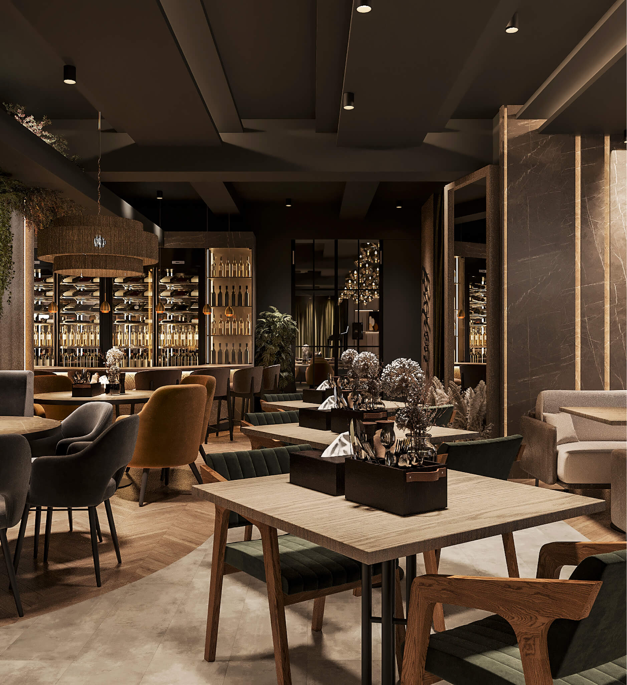
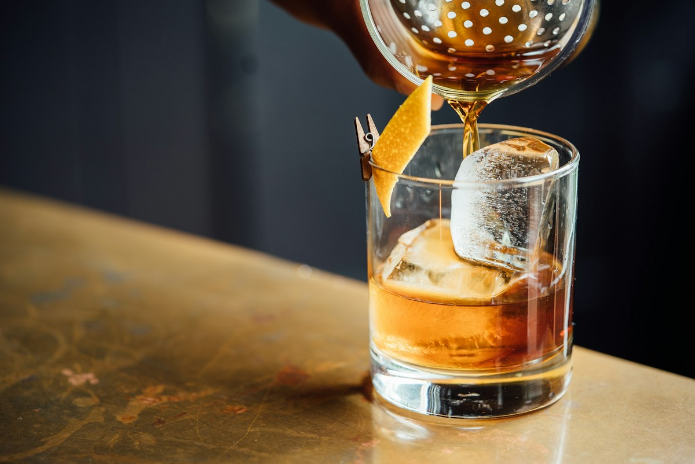

ЧЕБОКСАРЫ · НИЖЕГОРОДСКАЯ, 6GASTRONOMY. BAR. MOMENTS.
У КАЖДОГО ВЕЧЕРА — СВОЙ ВКУС
BALCON
Искусство
быть здесь.
Город за окном. Вино в бокале.
И вечер, который хочется продлить.
ЛИСТАЙТЕ, ЧТОБЫ ПОЧУВСТВОВАТЬКУХНЯ · ВИНО · АТМОСФЕРА
МЕСТО, В КОТОРОМ ХОРОШО
Чуть выше
повседневности.
Чуть ближе к себе.
BALCON — пространство для вечеров, у которых нет повода заканчиваться рано.
Европейская и паназиатская кухня, авторский бар и мягкий свет. Приходите на ужин вдвоём, собирайте друзей или просто выбирайте место у окна.
Почувствовать атмосферуГАСТРОНОМИЯ БЕЗ ЛИШНИХ СЛОВ
Вкус —
главный акцент.
Знакомые сочетания в новом прочтении.
От первого впечатления
до последнего кусочка.
ВКУСЫ НАШЕГО КОНЦЕПТА


ОСТАВЬТЕ СУЕТУ ЗА ДВЕРЬЮ
Некоторые вечера
становятся историями.
НАСТРОЕНИЕ В ДЕТАЛЯХ
Здесь хочется
остаться.
Тактильные фактуры. Тёплые оттенки.
Пространство, которое умеет
быть частью вашего вечера.
Интерьер — BALCON. Гастрономические и барные фотографии — атмосферные иллюстрации.
ВАШ ВЕЧЕР НАЧИНАЕТСЯ ЗДЕСЬ
До встречи
на BALCON.
ВРЕМЯ ДЛЯ ХОРОШЕГО ВЕЧЕРА
Перейти на официальный сайтВс — Чт 12:00 — 00:00
Пт — Сб 12:00 — 03:00